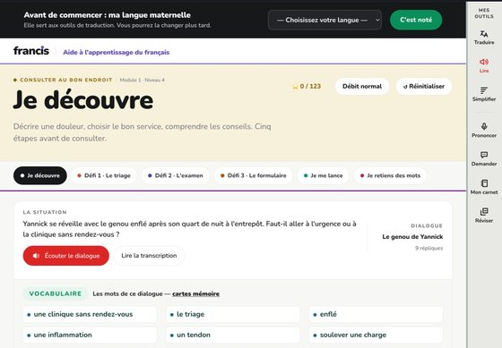
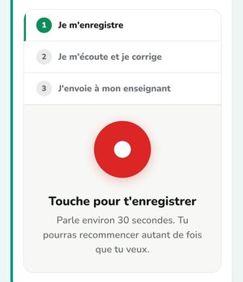
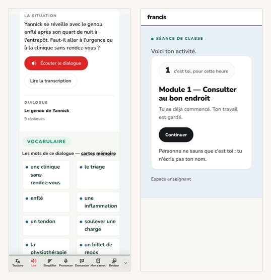
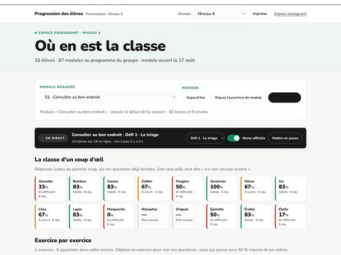

Bibliothèque de francisation · 8 septembre 2026
Un courriel qui montre, avec quatre images — deux d'ordinateur, deux de téléphone. C'est l'autre courriel : celui de démarchage tient en 150 mots et n'a qu'un but, faire cliquer. Celui-ci fait le tour de ce qu'est Francis et de ce qui l'y distingue, pour une direction qui vous connaît déjà ou qui a demandé à en savoir plus.
Une direction ne se laisse pas convaincre par une description. Elle se laisse convaincre par un écran d'élève.
D'où la forme : chaque affirmation du courriel est suivie de l'image qui la prouve. Trois innovations, trois images, plus une pour dire ce que c'est. Le texte seul tiendrait en dix lignes ; ce sont les images qui portent l'envoi.
Le courriel
Les images sont à glisser dans le corps du message aux endroits indiqués. Les repères en majuscules disparaissent une fois l'image posée.
Bonjour [prénom],
Je vous écris au sujet de Francis, la bibliothèque de cours de francisation pour adultes que j'ai développée et que j'utilise en classe. Elle couvre les huit niveaux du programme d'études du Ministère : 87 modules de cours, 90 ateliers, 1 518 heures de classe préparées, et le matériel papier de chaque séance — la fiche de l'élève et le diaporama de l'enseignant pour chacune des 1 264 séances. Le contenu est original : aucun manuel n'y est reproduit.
Voici ce qu'un élève ouvre le matin. Un module est une situation de vie complète — ici, consulter au bon endroit : le dialogue, les mots, les exercices, puis une production orale et une production écrite.

Trois choses la distinguent de ce qui se fait ailleurs.
C'est le mur de nos classes : l'adulte qui n'ose pas ouvrir la bouche devant les autres. Ici, il s'enregistre seul, il s'écoute, il recommence autant de fois qu'il veut, et il n'envoie son enregistrement à son enseignant que lorsqu'il le décide. Un élève parle ainsi vingt fois plus qu'en classe, et ce sont ses vingtièmes essais que l'enseignant écoute.

Beaucoup de nos élèves n'ont pas d'ordinateur. Ce n'est pas une version réduite : les mêmes dialogues, les mêmes exercices, corrigés sur l'appareil. Et une classe peut y entrer sans compte — l'enseignant imprime une feuille, l'élève vise le carré avec son appareil photo, et il est dedans pour l'heure : pas de mot de passe, pas de nom à donner.

Qui a fait quoi, qui bloque en ce moment même, quelles erreurs reviennent dans le groupe. Ce n'est pas un bulletin livré à la fin : c'est la classe en train de se faire, et le matériel qui sert à reprendre le point manqué est déjà là.

Deux choses appartiendraient à votre centre avant toute utilisation : la durée de
conservation des travaux des élèves, et l'ouverture — ou non — de l'assistance
automatisée qui explique une consigne à celui qui n'ose pas lever la main. Les deux se
règlent dans un écran, et tout le reste continue de fonctionner quand elle est fermée.
J'ai écrit ce que ça implique ici :
portail.edufrancis.ca/assets/presentations/guide-direction.html
Vous pouvez l'essayer maintenant, sans compte, comme un élève — dix minutes :
portail.edufrancis.ca/modules-autonomes/le-on-quebecois/
Auriez-vous vingt minutes dans les prochaines semaines ? Je vous montre le reste en direct.
[Prénom Nom]
[titre], [centre]
420 mots · 4 images · 2 liens
Les images
Toutes sont des captures du portail en marche, pas des maquettes. Elles sont cadrées pour un courriel : 560 px de large au plus, et jamais l'écran entier — seulement la zone qui porte l'argument. Le texte de remplacement compte autant que l'image : Outlook ne l'affichera pas d'emblée, et c'est lui qui sera lu à sa place.
Dit ce que c'est en un coup d'œil : une situation de vie, un dialogue à écouter, les mots, les exercices. Le rail d'outils à droite se voit sans être expliqué.
Texte de remplacement : Le module d'un élève : le dialogue, le vocabulaire et les exercices
Les trois gestes numérotés — je m'enregistre · je m'écoute et je corrige · j'envoie à mon enseignant — et, sous le bouton, « tu pourras recommencer autant de fois que tu veux ». L'image prouve le paragraphe au lieu de le promettre.
Texte de remplacement : Le panneau d'enregistrement : je m'enregistre, je m'écoute et je corrige, j'envoie à mon enseignant
Deux écrans dans une seule image, pour ne pas multiplier les chargements : le dialogue du module tel qu'il se lit sur un appareil, et l'entrée dans une séance sans compte — « c'est toi, pour cette heure ».
Texte de remplacement : Deux écrans de téléphone : le dialogue du module, et l'entrée dans une séance sans compte
Le tableau du groupe, module par module, avec le direct en tête. C'est l'image qui parle à une direction : elle y reconnaît un instrument de suivi, pas un exerciseur.
Texte de remplacement : Le tableau du groupe : où en est la classe, module par module
À l'envoi
Dans Outlook comme dans Gmail, une image déposée dans le texte voyage avec le message. Une image liée à une adresse web est bloquée par défaut par Outlook : le destinataire voit quatre rectangles vides et un bandeau d'avertissement.
Clic droit sur l'image → « Texte de remplacement ». C'est ce qui s'affiche tant que le destinataire n'a pas cliqué sur « Afficher les images » — c'est-à-dire, pour beaucoup, toujours. Les quatre textes sont donnés ci-dessus.
Une image en tête de message est la signature visuelle d'un envoi de masse, et les filtres la lisent ainsi. La première image arrive après le troisième paragraphe, quand le destinataire sait déjà de quoi on parle.
Les quatre font 119 Ko ensemble, ce qui passe partout. Au-delà de 1 Mo, certains serveurs de centre de services découpent ou refusent le message.
Il enfreint sciemment la règle d'une seule image établie pour le courriel de démarchage. Elle reste juste pour un premier contact à froid : quatre images font une infolettre, et une infolettre se classe au lieu de se lire.
Ce courriel-ci vise l'autre situation — une direction qui vous connaît, ou qui a répondu « racontez-moi ». Là, le risque n'est plus de paraître promotionnel, c'est de rester abstrait. Si vous ne savez pas dans lequel des deux cas vous êtes, envoyez celui de démarchage, et gardez celui-ci pour la réponse.
À trancher avant d'envoyer, comme pour l'autre : le « je » (vous seul, ou le centre), ce que vous demandez vraiment (vingt minutes, ou un groupe-pilote), et l'adresse du lien d'essai — les deux liens du modèle sont des repères, à remplacer par les vôtres.